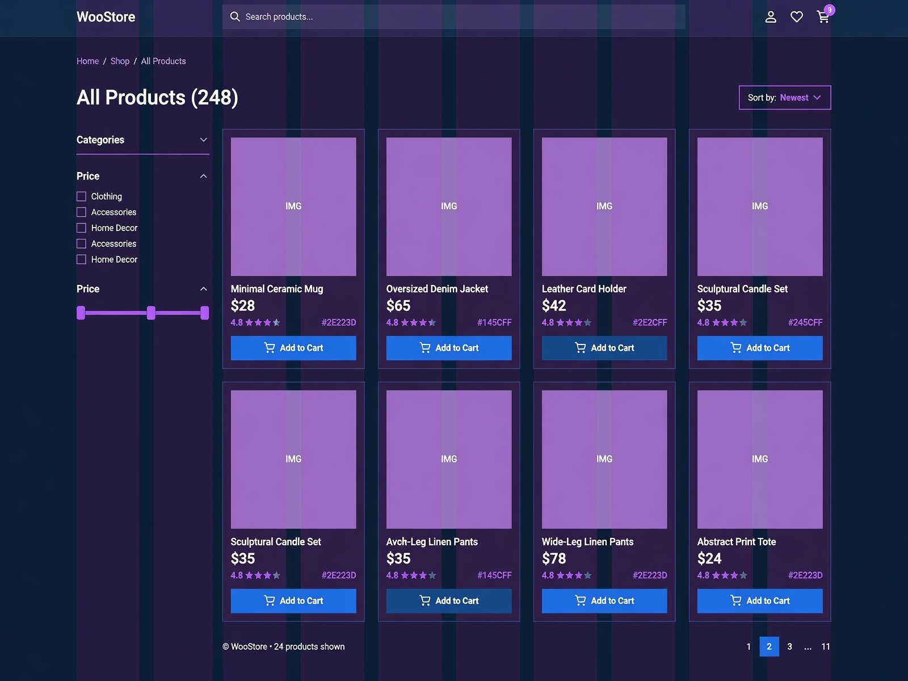
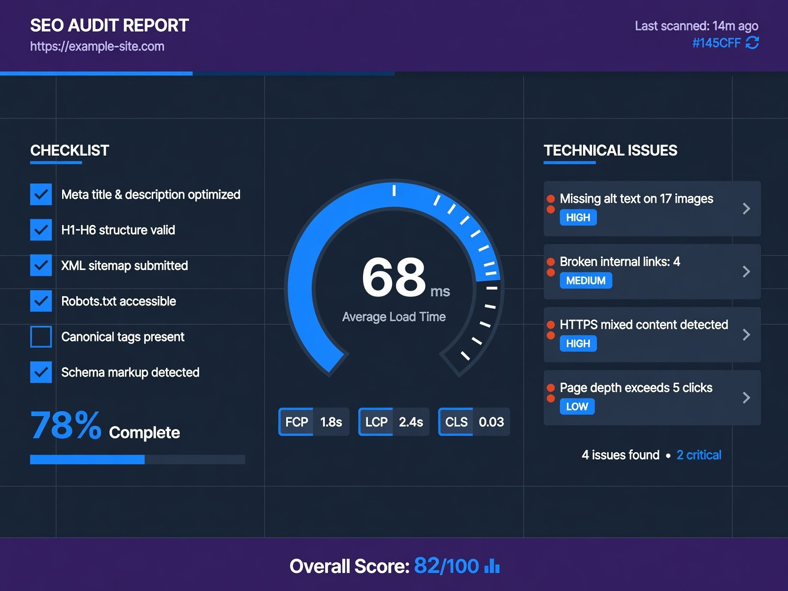

Detailed breakdowns of objectives, challenges, strategy, completed work and tools. All projects are concept projects or demo case studies — no performance figures are claimed.

01 · Digital Marketing · Service Business · Concept Project
Digital Marketing Campaign
An integrated digital marketing plan connecting social media content, lead generation and analytics tracking.
Objectives
- Build a monthly content plan for social channels
- Create a simple lead capture and follow-up path
- Track activity with analytics from day one
Challenges
- Inconsistent posting with no content themes
- Leads collected with no organized follow-up process
- No measurement setup to review performance
Strategy
- Content pillars mapped to audience questions
- Landing page and form as the single lead destination
- Analytics events defined before the campaign launch
Work completed
- Digital marketing strategy document
- Social media content calendar and posting plan
- Lead generation form and follow-up workflow
- Google Analytics setup and reporting structure
- Campaign management and review routine
Tools
Google AnalyticsMeta Business SuiteCanvaGoogle Sheets
Outcome
A documented marketing system with a content calendar, a lead capture path and an analytics structure ready for execution.

03 · SEO · Local Home Cleaning Service · Demo Case Study
One-Page SEO Optimization
A complete on-page and technical SEO structure planned for a single service landing page targeting local search intent.
Objectives
- Build a clear keyword and search intent map for one service page
- Structure headings, metadata and URLs for local relevance
- Improve technical health, crawlability and indexing readiness
Challenges
- A single page had to cover several related local search terms
- Thin content structure with no heading hierarchy
- Missing metadata, alt text and internal linking
Strategy
- Keyword research grouped by intent (service, location, problem)
- Content outline mapped to H1–H3 hierarchy
- Local SEO signals placed in metadata and page copy
Work completed
- Keyword research & search intent analysis
- Meta title and meta description optimization
- H1–H3 optimization and URL cleanup
- Image SEO with descriptive alt text
- Internal linking plan and basic schema markup
- Crawlability and indexing checks
Tools
Rank MathGoogle Search ConsoleGoogle Keyword PlannerPageSpeed Insights
Outcome
The page was delivered with a documented keyword map, a clean heading structure, optimized metadata and a technical SEO checklist — a repeatable on-page framework rather than a promise of rankings.

04 · WordPress · Local Service Business · Concept Project
Professional WordPress Business Website
A multi-page WordPress business website built with Elementor, focused on clear service presentation and enquiry flow.
Objectives
- Present services clearly across a simple, scannable structure
- Create a conversion-focused enquiry path on every page
- Deliver a fully responsive layout for mobile visitors
Challenges
- Service information had to stay readable on small screens
- Consistent design system needed across multiple templates
- Page speed had to remain reasonable with a page builder
Strategy
- Reusable Elementor sections and a defined type scale
- Single primary call to action repeated across templates
- Lightweight plugin stack and optimized media
Work completed
- Sitemap, wireframes and template planning
- Elementor page building and theme customization
- Responsive and mobile optimization pass
- Contact form setup and basic website optimization
- On-page SEO basics for every template
Tools
WordPressElementorRank MathWPForms
Outcome
A consistent, responsive business website with reusable templates that the owner can extend without developer support.

05 · WordPress · E-commerce · Concept Project
WooCommerce Online Store
A WooCommerce store concept covering catalogue structure, product templates and a streamlined checkout experience.
Objectives
- Structure categories and product data for easy browsing
- Design clean product and cart templates
- Reduce friction between product page and checkout
Challenges
- Product variations needed a simple selection interface
- Mobile checkout had to stay short and clear
- Store pages needed SEO-ready structure
Strategy
- Category architecture planned before design
- Product template with trust and shipping information above the fold
- Simplified checkout fields and visible cart state
Work completed
- WooCommerce setup and catalogue structure
- Product, cart and checkout template customization
- Payment and shipping configuration structure
- Responsive design and mobile optimization
- Product page SEO and image optimization
Tools
WordPressWooCommerceElementorRank Math
Outcome
A complete store framework with documented product templates and a checkout flow designed for mobile-first shoppers.

06 · SEO · Small Business · Demo Case Study
WordPress SEO & Website Optimization
A full WordPress SEO audit and optimization pass covering technical health, on-page structure and plugin configuration.
Objectives
- Identify technical SEO issues across the website
- Standardize metadata and heading structure sitewide
- Set up SEO plugin configuration correctly
Challenges
- Duplicate titles and missing descriptions across pages
- Unstructured internal linking between service pages
- Large unoptimized images affecting load performance
Strategy
- Full site crawl and prioritized audit checklist
- Template-level metadata rules instead of page-by-page fixes
- Topic based internal linking between related pages
Work completed
- SEO audit report with prioritized actions
- SEO plugin setup and sitemap configuration
- Meta title, description and heading optimization
- Image compression and alt text pass
- Internal linking and basic schema implementation
Tools
WordPressRank MathGoogle Search ConsoleScreaming Frog
Outcome
The website was left with a documented audit, corrected technical structure and a clear maintenance checklist for ongoing SEO work.